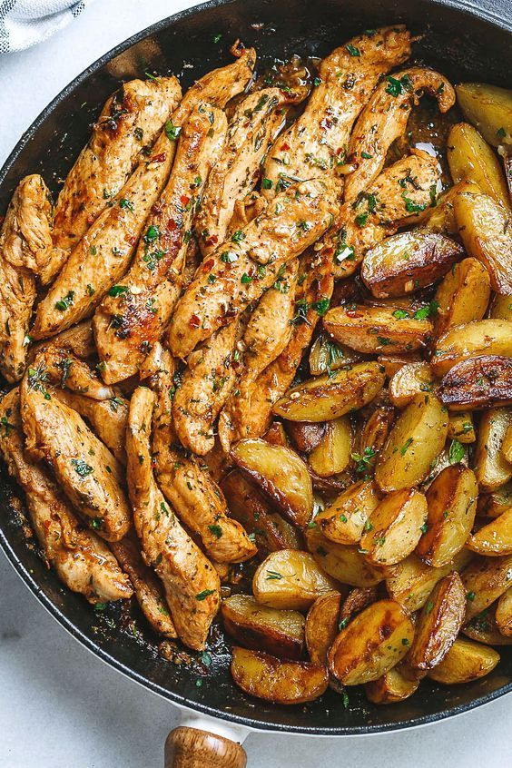
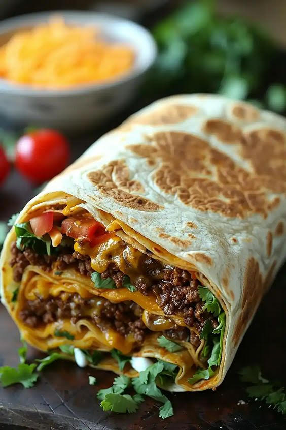
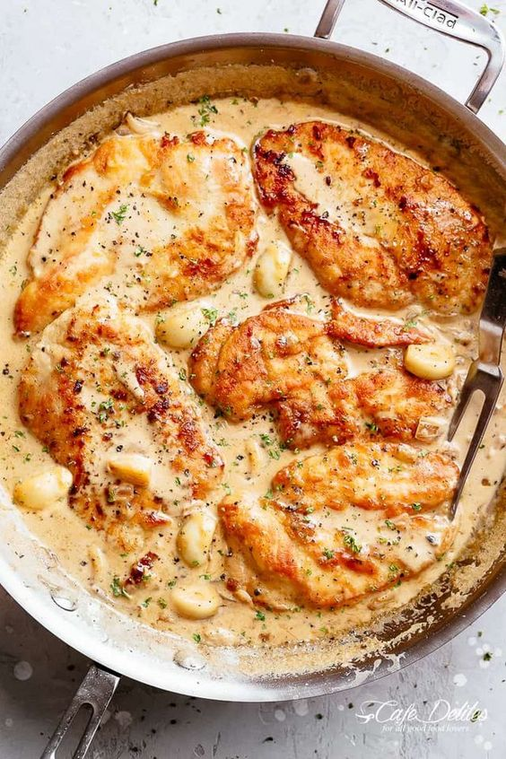
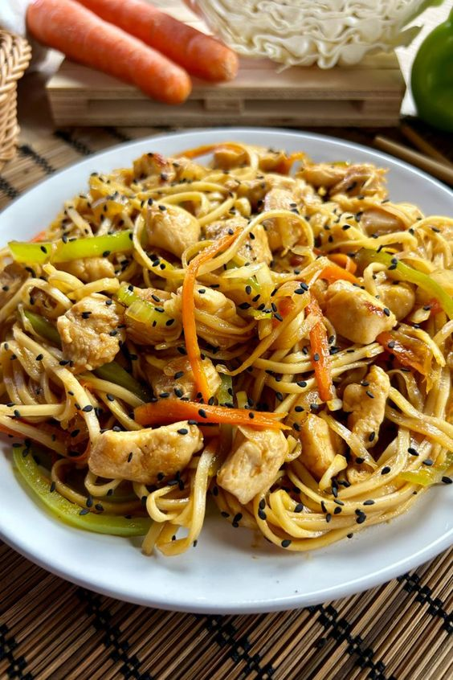
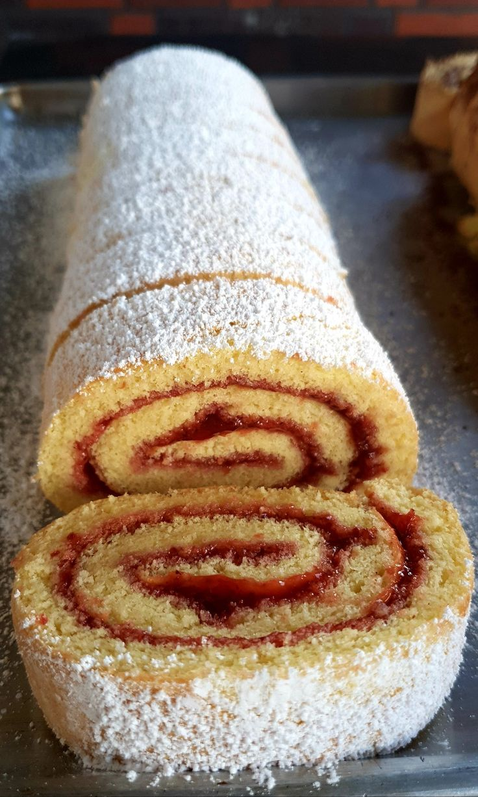

Batata Rustica
É uma opção de acompanhamento ou petisco que destaca a textura crocante e o sabor irresistível das batatas.

Burrito
É um prato tradicional da culinária mexicana e da culinária Tex-Mex consistindo em uma tortilla de farinha geralmente recheada de diversos ingredientes

Frango ao Molho
O toque especial para suas refeições deliciosas.
Panqueca
É uma sobremesa maravilhosa,Feito com ingredientes simples

Yakisoba
Prato de origem japonesa, cujo nome significa, literalmente, "macarrão de sobá frito".

Rocambole
Especiarias exóticas para sabores autênticos.